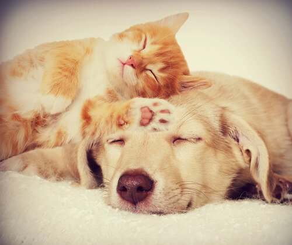

Animales Domésticos
Los animales domésticos son pequeños o grandes animales que pueden llegar a ser domesticados por el hombre y, por tanto, convivir con ellos. Cuando pensamos en animales domésticos lo hacemos en perros, gatos, etc., pero también lo son los caballos, las gallinas, etc. porque son animales domesticados por el hombre. Los animales de la granja también son considerados como domésticos.